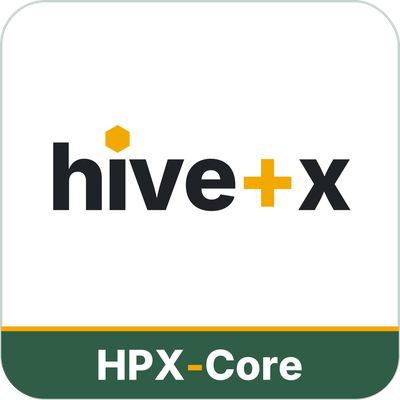
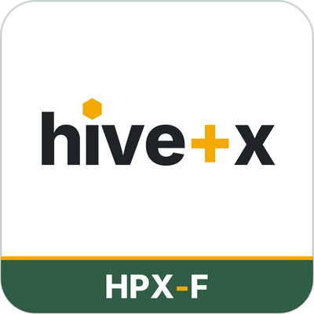
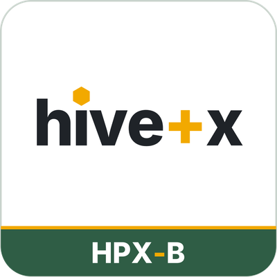
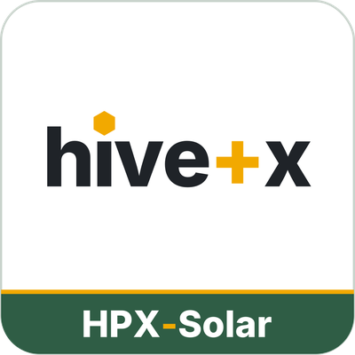

GitHub
GitHub で公開しているもの
プログラムと図面は、すべて GitHub のリポジトリにあります。右の一覧から、見たいフォルダを開いてください。
まとめて手に入れたいときは、下のボタンでリポジトリ全体を zip でダウンロードできます。GitHub のページでは、緑の「Code」ボタン →「Download ZIP」でも同じです。

Download
ファームウェア、サーバーのプログラム (HPX-Server)、回路図などは GitHub で公開しています。機器に貼るステッカーはこのページからダウンロードできます。利用にあたっては、オープンソース方針をご確認ください。
GitHub
プログラムと図面は、すべて GitHub のリポジトリにあります。右の一覧から、見たいフォルダを開いてください。
まとめて手に入れたいときは、下のボタンでリポジトリ全体を zip でダウンロードできます。GitHub のページでは、緑の「Code」ボタン →「Download ZIP」でも同じです。
Sticker
自作した HPX の機器に貼るステッカーです。上が白で hive+x、下の緑の帯に機器名を入れました。重量センサ HPX-W だけは、細長い機器に合わせた横長です。
zip には 7 種類の SVG (印刷用) と PNG (画像) が入っています。正方形は 50mm 角、HPX-W は 100mm × 21mm で作っていますが、SVG は拡大・縮小しても形が崩れません。



